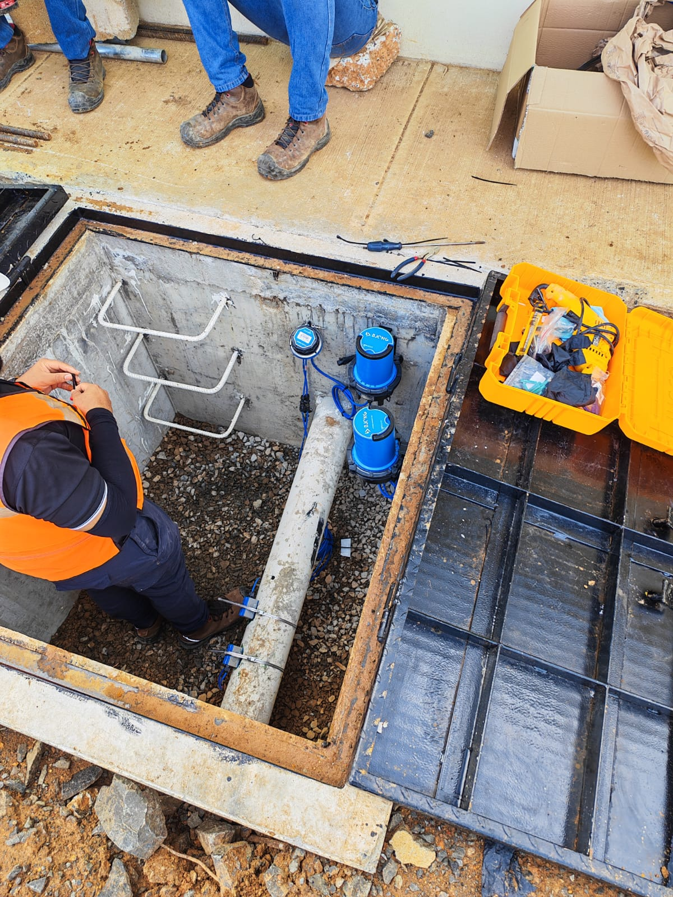
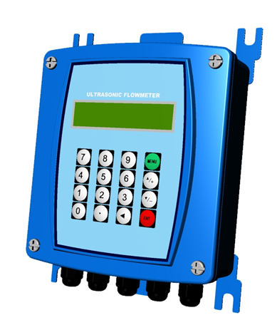

📞 +507 6675-8529
✉ contacto@zernikeal.com
Tecnologías avanzadas para monitoreo, control y gestión eficiente de redes hidráulicas.

Sistema avanzado para adquisición, registro y transmisión de datos en redes de distribución de agua.
Ver producto
Medidor de caudal fijo a tiempo de transito.
Ver producto